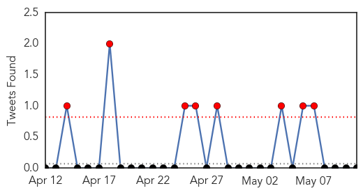
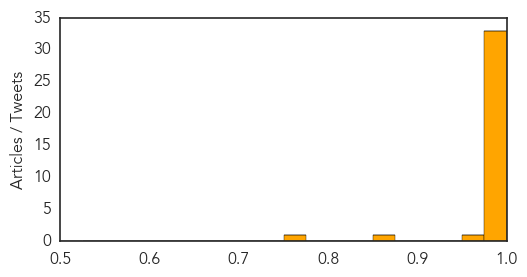

Toggle navigation
Early Warning
Daily Alerts
Middle East Respiratory Syndrome
May 11, 2014
Compare to:
-
Dengue Fever
Hemmorhagic Fever
Mold/Fungal Infection
Influenza
Meningitis
Pertussis / Whooping Cough
Cholera
Hepatitis
Chikungunya
Yellow Fever
Bubonic Plague
West Nile Virus
Swine Flu
Ebola
Measles
Unknown
Mumps
30 Day Trends
Web: 29
alerts
, 0
warnings
Twitter: 13
alerts
, 0
warnings
Top Articles:
1.000
Kuwait's MoH takes precautions against virus
1.000
First American MERS patient released from Indiana hospital after officials determine he 'poses no threat to the community'
0.999
Should I worry about catching Mers?
0.998
Saudi MERS death toll rises to 126
0.998
Initiate action against Mers on war footing
0.998
Saudi Arabia reports more #MERS deaths
0.997
Three new MERS deaths in Saudi Arabia
0.997
7 new MERS deaths in Saudi Arabia
0.996
Travelers to Middle East ...｜Society｜WCT
0.996
Saudis warn of MERS risk from camels as cases approach 500
0.996
Jordan confirms new death of MERS virus infection
0.996
U.S. acts quickly as new virus hits
0.995
Saudi Arabia finds another 32 MERS cases as disease spreads
0.995
Saudi Arabia issues deadly Mers warning and tells all people handling camels to wear face masks and gloves
0.995
Saudi Arabia finds another 32 MERS cases as disease spreads
0.994
13 more die from MERS..., SahilOnline News
0.994
REFILE-UPDATE 1-Saudi Arabia finds another 32 MERS cases as disease spreads
0.994
Saudi warns of Mers risk from camels as cases rise
0.993
Saudis warned, beware the camel
0.993
13 new MERS deaths in Saudi Arabia
0.993
Saudi Arabia warns of MERS risk from camels - Kuwait Times
0.993
13 new MERS deaths in Saudi Arabia. Health. Tengrinews.kz
0.992
Saudi Arabia finds another 32 MERS cases as disease spreads
0.989
Saudi Arabia warns of MERS risk from camels as cases rise
0.988
Saudi Arabia warns of MERS risk from camels as cases rise
0.987
Saudi Arabia warns of MERS virus risk from camels
0.987
Saudia warns of MERS risk from camels
0.986
Quick action needed to address Coronavirus in Saudi Arabia
0.986
Saudi Arabia warns of Mers virus risk from camels
0.984
First Case Of MERS Reported In Lebanon - Health Ministry
0.983
Saudi Arabia warns of MERS risk from camels
0.981
FBC News
0.981
Saudi warns of MERS risk
0.974
Saudi Arabia warns of MERS virus risk from camels
0.850
D-G: Man who died on flight suffered heart attack - Nation
0.770
Health workers under Aquino, overworked, underpaid « Bulatlat
Top Tweets:
No tweets found for May 11, 2014
Web/News Articles
Tweets

Article Locations
Article Confidences
